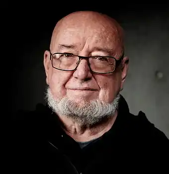
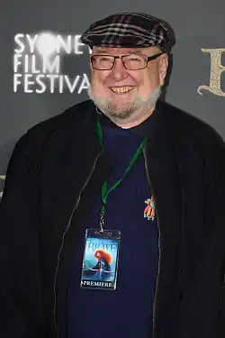

Томас Майкл Кініллі, AO (англ. Thomas Michael Keneally; нар. 7 жовтня 1935, Сідней) — австралійський письменник, драматург та автор документальної прози. Насамперед відомий завдяки роману "Список Шиндлера", написаному під враженням від життя Леопольда Пфефферберга, який пережив Голокост. 1982 року твір отримав Букерівську премію. За мотивами роману створено фільм "Список Шиндлера", який отримав Премію "Оскар" за найкращий фільм.
Народився 7 жовтня 1935 року в Сіднеї, Австралія, в сім'ї ірландських католиків. Свої перші дитячі роки провів у різних містах на півночі Нового Південного Уельсу, але 1942 року разом із сім'єю знову повернувся до Сіднея. Через астму багато часу проводив за читанням книжок.
Після служби в армії вступив до коледжу Святого Патріка в Стратфілді. Згодом навчався в семінарії Святого Патріка в Менлі, Новий Південний Уельс, але покинув навчання до свого посвячення у сан священика. У 1960—1967 роках працював вчителем середньої школи в Сіднеї. У 1968—1970 роках працював викладачем драми в Університеті Нової Англії, Новий Південний Уельс. Входив до складу низки літературних та політичних австралійських інституцій. У 1991—1995 роках працював як запрошений професор в Каліфорнійському університеті в Ірвіні та Нью-Йорському університеті. 1964 року опублікував свій дебютний роман під назвою "Семінарія у Віттоні", а після публікації роману "Приведіть жайворонків та героїв" (3-тій за ліком) покинув роботу, щоб повністю присвятити себе письменницькій кар'єрі. Три його романи — "Пісня Джіммі Блексміта", "Лісові плітки" та "Конфедерати" — потрапили до короткого списку Букерівської премії. Став відомим завдяки роману "Список Шиндлера" (1982), що розповідає про Оскара Шиндлера, члена нацистської партії, який врятував життя 1300 євреїв, визволивши їх з концентраційних таборів Польщі та Німеччини. Роман приніс авторові Букерівську премію. 1993 року режисер Стівен Спілберг презентував однойменну екранізацію з Ліамом Нісоном, Рейфом Файнзом та Беном Кінгслі в головних ролях. 1983 року письменника нагороджено орденом Австралії за заслуги перед літературою. 1965 року одружився з Джудіт Мартін, з якою має дві дочки. Разом із сім'єю мешкає в Сіднеї.